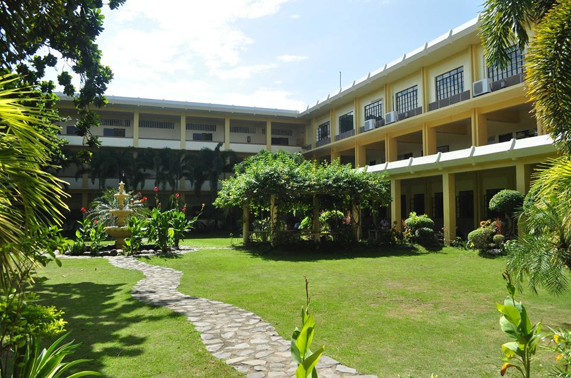
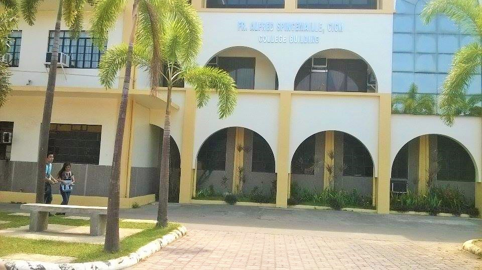

 

About Saint Louis College
SAINT LOUIS COLLEGE,widely known as the Beacon of Wisdom in the North, began its academic journey when Msgr. Salvador Lazo, then the parish priest of San Fernando, La Union founded Father Burgos College. In 1964, the CICM missionaries took over the ownership and management of the school and renamed it as Saint Louis College.
Since then, SLC welcomed to its academic portals students coming from various points of the Ilokandia and nearby communities who thirst for academic excellence and integral human formation.
Indeed, as Saint Louis College prepares itself for more in coming years, the SLC community continues to be true to its founding goals centered on True Christian Living, Relevant Academic Excellence, Active Social Involvement, and Committed Professional Leadership. Along these goals, Louisians – then and now – have shown meritorious achievements in various competitions in local, national, and international levels.
As Louisians continue to train our body and mind and look with eagerness to a bright future that beacons, theLouisian community look with much vigor and enthusiasm as SLC celebrates in 2014 her 50 golden and years of being the finest source of wisdom builders and professionals.
As reflected on its official hymn, every Lousian is encouraged to sing a song gay and cheerful, bursting forth from our young and joyous hearts. For our life is so bright for we study right, we choose a smile for our part. Here we are, students of Saint Louis that is why we are so proud. We'll always stand in defense for it for it makes us brave and fit.
This is SLC, the beacon that shines so bright in the Northern part of the Philippines, the source of wisdom, and the light that guides many towards values-oriented education. This makes forever the proud Louisians; we always take pride to have tasted her legacy of unparalleled academic excellence. We are the beacon of wisdom in the north – that's what we are and that's what we will always be... We are SLC, and together, we all march to keep aflame the missionary work we have envisioned...